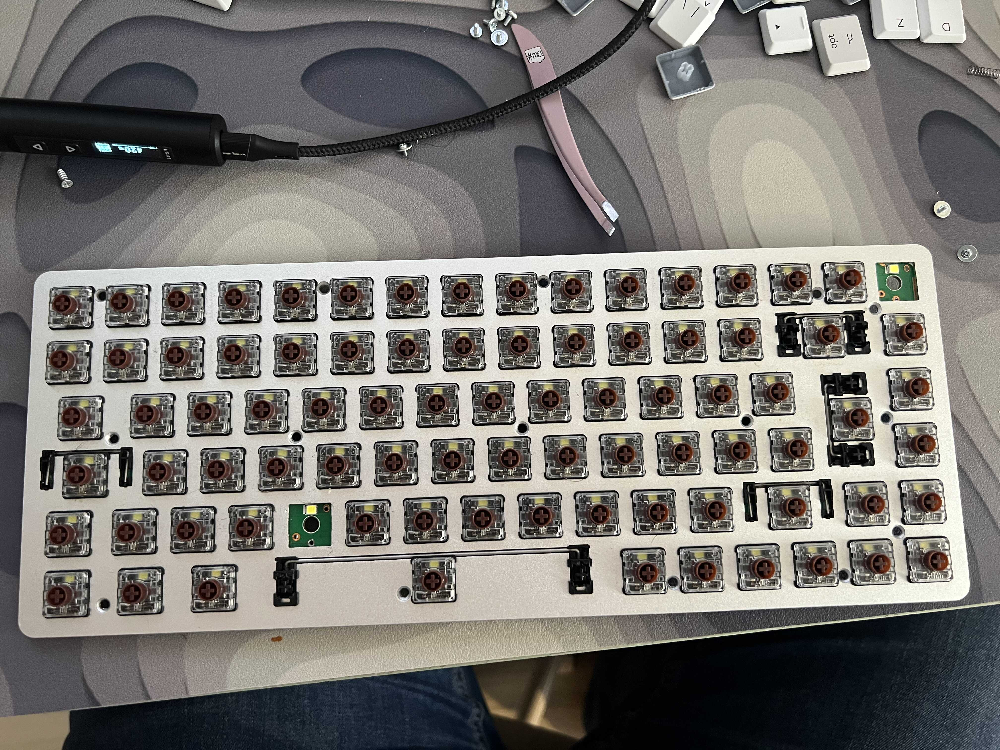
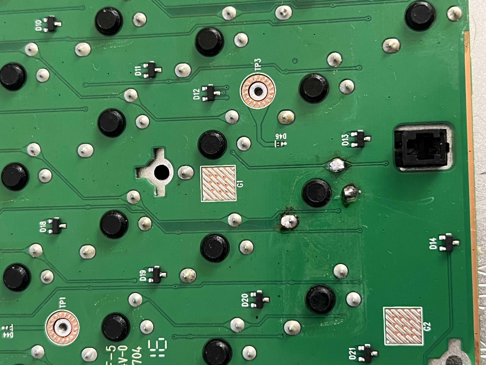
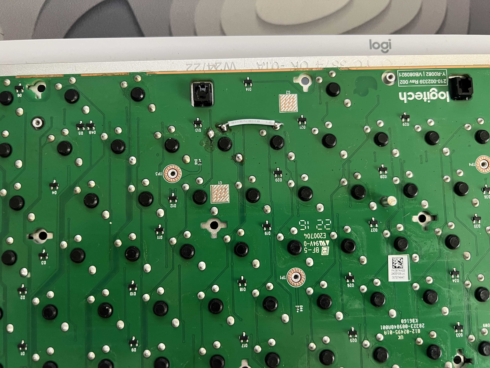
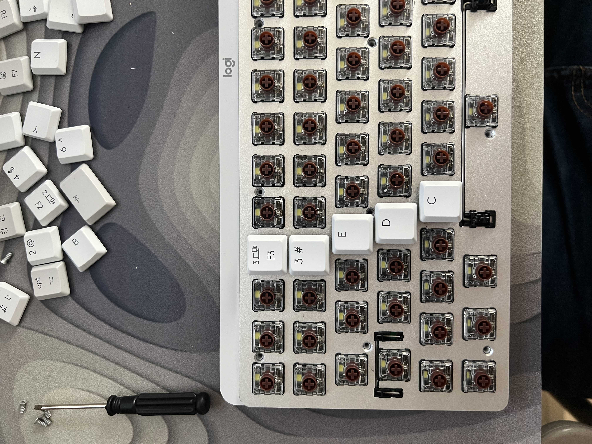
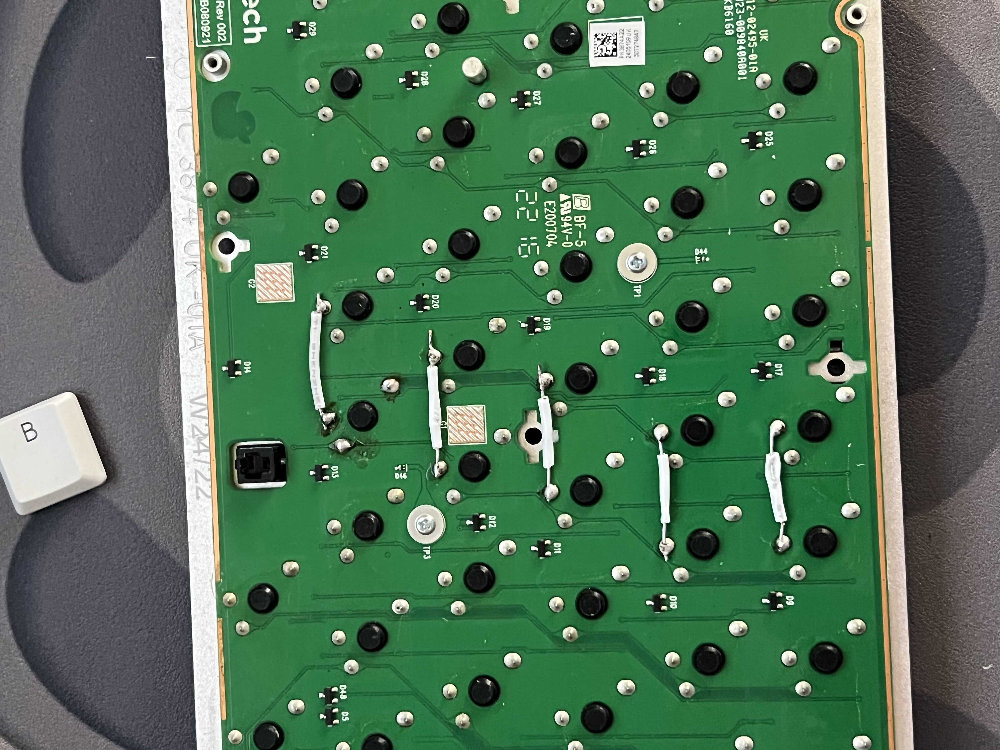
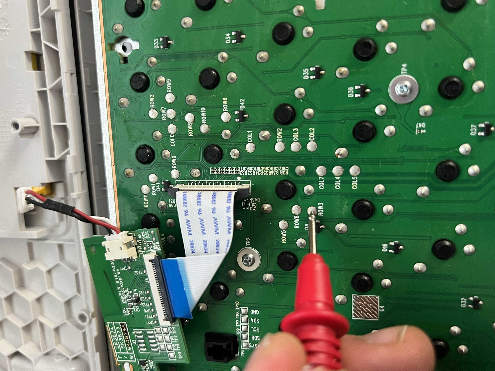
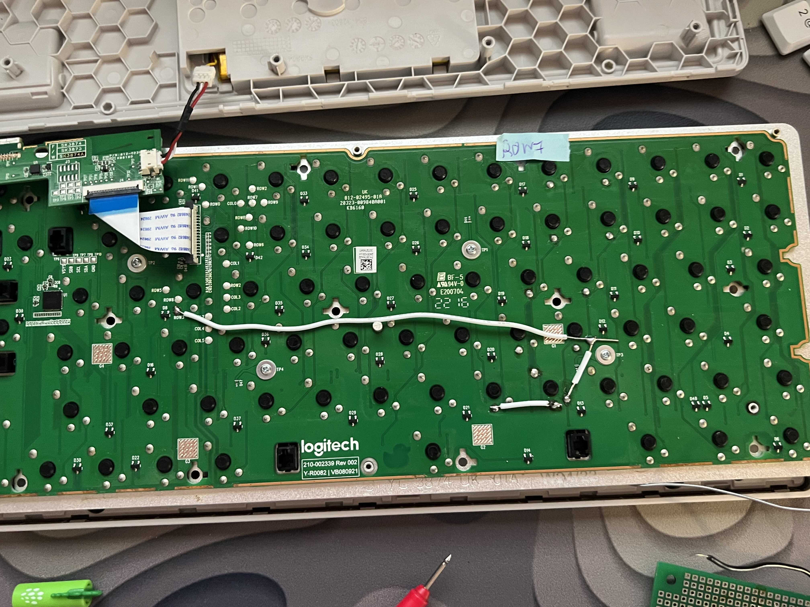

Despite my best efforts, violent upside-down shakes, unholy curses and pious prayers the keyboard didn't survive. Hell energy, a liquid vital for my well-being and prosperity turns out to be more akin to a venom as far as keyboard switches are concerned. The saddest part of this ordeal is that this is not the first time this happens to me - my laptop's integrated keyboard suffered a similar fate 4 years ago.
The accident might be the same, but I have changed. I'm a grown man now. A man capable of resolving his problems with a vast array of skills acquired by watching unfathomable amounts of YouTube videos. Armed with determination, I decided to repair my keyboard, instead of just buying a new one. Oh, and also - the keyboard I wanted is out of stock and I can't wait 3 weeks without using my desk.
I may have overblown the damage report in the first paragraph. The keyboard was working fine as far as the electronics are concerned. It's just the mechanical switches that became sticky and unresponsive. A couple of wet wipes and an old toothbrush fixed nearly all of them, except the one under the letter C - a beloved letter that I couldn't live without.
There's a key on the top-right of the keyboard that I never figured out how to use. The pictograms etched by the manufacturer were never decoded by my brain, thus I decided to swap this pristine, practically unused switch with the failed "C" switch. It should be trivial - remove the keyboard screws, and swap.
Turns out it was not *that* simple. The keyboard has 3 layers - bottom shell with an integrated battery and a short and tight cable. It connects to a middle layer, containing the transmitter and a paper-like ribbon cable that connects to the outermost layer, the one with the PCB and switches. After more than 20 screws of various lengths and sizes I managed to take it all apart. Alas, this did not help me much, because it turns out the switches are individually soldered to this top layer. Despair not I said to myself - I'll just use a soldering wick I have handy. Well, even after removing all traces of solder the damn "C" switch still didn't budge. So I had to gently persuade it with a pair of pliers, which sadly destroyed it. It rapidly disassembled into millions of pieces (4 actually but who keeps count), pushed apart by the kinetic energy stored in its spring.
Anyways, this switch was broken to begin with, so I wasn't bothered much. This experience must have been enlightening to its neighbours, because the donor switch came out with incredible finesse.
I soldered this new switch into the "C" hole aaaaand it didn't work. Well, the switch was fine, but nothing appeared on the screen when I clicked it. I reasoned that the energy drink tsunami must have been so intense that it also damaged the traces/pads the switch was connected to. Or maybe all this soldering and desoldering just moved the problem deeper, who knows.
I reasoned the pad above the switch must be related to the LED, which I didn't care about. This leaves me with 2 pads that do the actual work. I assumed one was like a constant ground something and the other was being digital_read() by the microcontroller. I took out my trusty multimeter that I stole from my high school robots club 5 years ago and started poking around. Accidentally I found out that bridging one of the pads to a neighbour's pristine pad made C work, so I soldered a little jumper.
Well that was a fun project! There was disassembling, unsoldering, resoldering, a tiny bit of reverse engineering. What a nice ending. I cleaned up the PCB, assembled everything together, put all the screws and keycaps and doodads and opened my editor to continue my work. But what a twist! Although the "C" now works, a whole bunch of other keys had stopped working. D, E, "F3" which I use to connect to my gaming PC, the number 3. The number 3! How could I live like that?
No longer simply determined, but straight up enraged I went through the WHOLE process again and laid bare the PCB in front of me. I soldered 4 more jump wires the same way I wired the bottommost one.
 They still didn't work!?!?!
I started meticulously shorting connections, tracing lines and looking at what TextEdit.app showed on my monitor. Turns out my idea of how the keyboard worked was completely wrong. It connects all the switches in a grid. Every switch has a row (that is physically a column) and a column. When a switch is depressed, let's say "W", it shorts row 2 with col 2. "S" - row 2 with col 3. You get the idea. Had I initially looked more carefully at the board the first time I could've noticed this earlier. The engineers left debugging pins for me!
After more carefully examining the PCB - the problem and solution were obvious. There was a single line (row 3) connecting all the keys in question. During my resoldering I must've severed the connection between "D-C" and between "C-controller" so 2 wires fixed that. I also severed the column4 connection, so I made a new connection between "C" and "V".
All that was left to do was test all the keys and after that put all the screws and keycaps back. Fun little project. Took 2 hours instead of 20 minutes, but hey - when was the last time your project was on time?